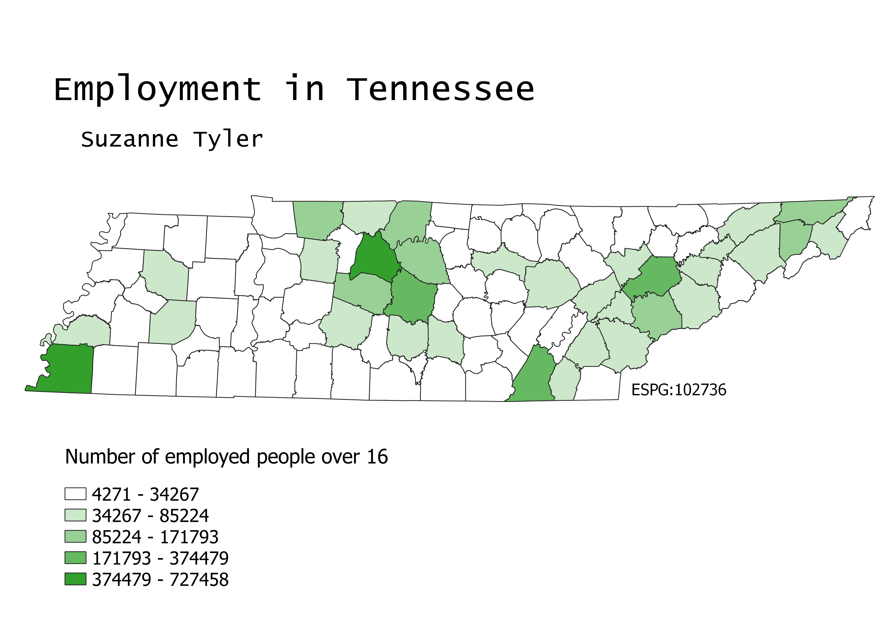

Tennessee Employment Choropleth
Suzanne Tyler // GEOG 370-006 // Homework 6 Part 1 // February 23, 2022
Map
This map was made using county vector data and population information from the census. I have linked my sources below. The map is projected in ESRI:102736, which is the state plane projection for Tennessee. I chose to use natural breaks so as to have no decimals.

Data Sources
Employment Census Data
County Vector Data
My Files
Cleaned Excel File of Educational Attainment Data (excel file)
Tennessee County Vector Data (geoJSON file)